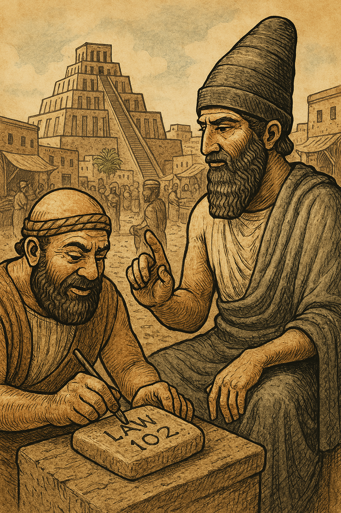

보험계리학의 기원은 고대 문명에서 위험을 체계적으로 관리하려는 노력에서 비롯됩니다. 바빌로니아와 중국은 각각 법적·실천적 제도를 통해 초기 형태의 위험 분산을 실현하였습니다. 이 시대의 제도는 현대 보험의 뿌리를 형성하며, 위험의 수량화와 공유라는 핵심 원리를 제시합니다.
The origins of actuarial science lie in the efforts of ancient civilizations to systematically manage risks. Babylonia and China realized early forms of risk distribution through legal and practical systems, respectively. The institutions of this era formed the roots of modern insurance, introducing the core principles of risk quantification and sharing.
바빌로니아에서는 약 1750 BCE경 함무라비 법전이 핵심입니다. 이 법전은 282개의 조항으로 구성된 점토판 문서로, 무역 상인들의 위험을 법적으로 규정하였습니다.
예를 들어, 법 100~105에서는 화물 운송 대출 시 도난이나 재난으로 인한 손실을 면책하는 시스템을 명시합니다. 추가 금액(보험료와 유사)을 지불하면 총 손실 시 원금만 상환하도록 하였으며, 법 103은 피해 시 맹세로 면책을 허용합니다.
또한, 법 235~238에서는 배 건조자의 과실로 인한 손실 시 가치의 절반을 보상하는 규정을 두어, 손실 규모를 미리 계산하는 개념을 도입하였습니다. 법 240은 배 충돌 시 책임 분배를 규정하며, 이는 위험 평가의 초기 형태입니다.
함무라비 법전은 단순한 법률이 아니라, 메소포타미아 무역 경제의 안정성을 위한 위험 관리 프레임워크로 기능하였습니다. 이 제도는 3천 년 전 상인들의 무역 활성화에 기여하였으며, 재난(Act of God)을 구분하여 보상하는 점에서 현대 보험의 조건적 면책과 유사합니다.
In Babylonia, the Hammurabi Code, dating back to around 1750 BCE, was central. This code, a clay tablet document consisting of 282 clauses, legally defined the risks faced by trade merchants.
For instance, clauses 100–105 specify a system that exempts losses due to theft or disaster during cargo transport loans. By paying an additional amount (similar to a premium), only the principal was repaid in case of total loss, and clause 103 allowed exemption through an oath in the event of damage.
Additionally, clauses 235–238 introduced the concept of pre-calculating loss magnitude by stipulating compensation of half the value in cases of loss due to the shipbuilder’s negligence. Clause 240 regulated liability distribution in ship collisions, marking an early form of risk assessment.
The Hammurabi Code was not merely a legal document but functioned as a risk management framework for the stability of Mesopotamia’s trade economy. This system contributed to the trade prosperity of merchants 3,000 years ago and, by distinguishing and compensating for acts of God (natural disasters), bears similarity to the conditional exemptions of modern insurance.
그림 1.1: 함무라비 법전 점토판, 1750 BCE
중국에서는 약 1000 BCE경 상나라 시대부터 시작된 화물 분산 관습이 대표적입니다. 양쯔강과 같은 하천 무역에서 상인들은 화물을 한 배에 집중하지 않고 여러 선박에 나누어 실었습니다. 이는 한 배의 침몰이나 재난 시 전체 손실을 최소화하는 방법으로, 위험을 분산하는 실천적 원리입니다.
이 관습은 인도 상인들과 공유되며 확산되었으며, 현대 보험의 리스크 풀링(risk pooling)과 유사합니다.
중국의 제도는 바빌로니아처럼 법적이지 않았으나, 경제적 배경(상나라와 주나라 초기의 무역 번성)에서 자연스럽게 발전하였습니다. 기록에 따르면, 이 방법은 화물 가치와 손실 확률을 암묵적으로 계산하는 행위로, 상호 보증 같은 시스템을 포함하였습니다.
이 두 문명의 공통점은 위험의 수량화와 분산입니다. 바빌로니아는 법적 제도로, 중국은 관습으로 태동하였으나, 이는 17세기 유럽의 본격적 발전을 위한 기초가 되었습니다.
고대 보험계리학은 무역과 재난 대처의 필요성에서 출발하였으며, 이는 현대 계리 모델의 위험 분산 원리를 예고합니다.
In China, the cargo distribution custom, which began during the Shang Dynasty around 1000 BCE, is representative. In river trade along the Yangtze River, merchants avoided concentrating cargo in a single vessel, distributing it across multiple ships. This method minimized total loss in case of a ship’s sinking or disaster, embodying a practical principle of risk distribution.
This custom spread as it was shared with Indian merchants and is similar to modern insurance’s risk pooling.
Unlike Babylonia, China’s system was not legal but naturally evolved from an economic background (the trade prosperity of the early Shang and Zhou Dynasties). According to records, this method involved implicitly calculating cargo value and loss probability, including a mutual guarantee system.
The common thread between these two civilizations is the quantification and distribution of risk. Babylonia emerged through legal systems, while China through customs, laying the foundation for the full development in 17th-century Europe.
Ancient actuarial science originated from the need to address trade and disaster management, foreshadowing the risk distribution principles of modern actuarial models.
그림 1.2: 양쯔강의 화물 분산 관습, 1000 BCE경
| 문명 | 주요 제도/사건 | 설명 | 보험계리학과의 연관성 |
|---|---|---|---|
| 바빌로니아 | 함무라비 법전 (1750 BCE) | 대출 보장, 손실 면책 법률 (법 100~105, 235~238, 240) | 위험 계산과 보상 체계의 초기 형태, 손실 규모 미리 평가, 조건부 면책 |
| 중국 | 화물 분산 관습 (1000 BCE경) | 여러 선박에 화물 나누기, 상호 보증 시스템 | 위험 분산과 확률적 관리, 리스크 풀링의 뿌리, 화물 가치 암묵적 계산 |